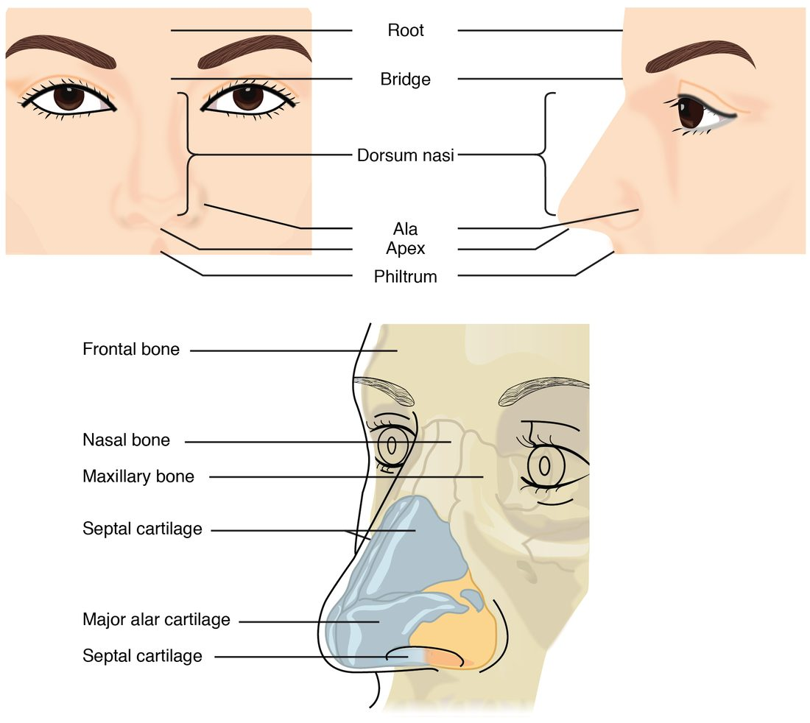
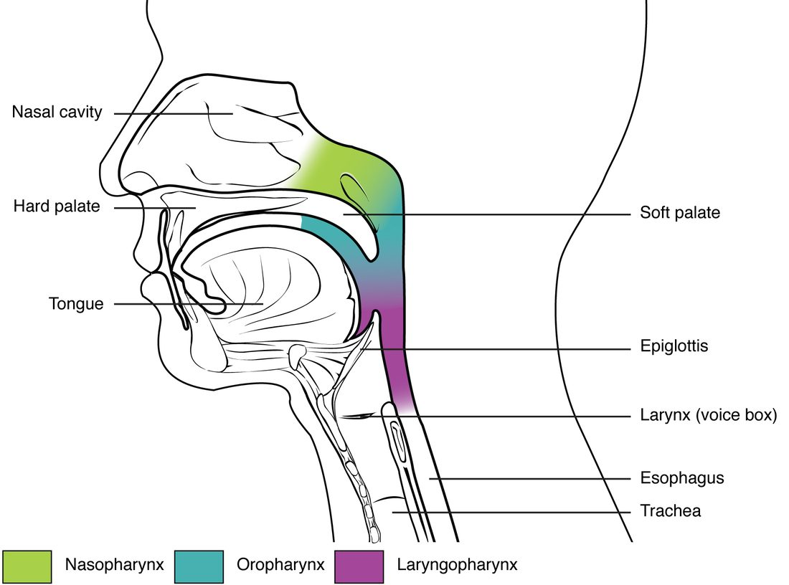
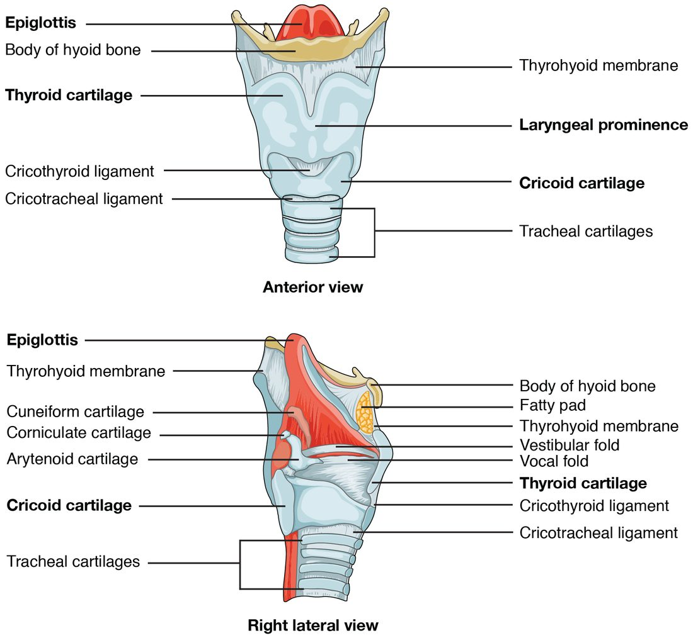
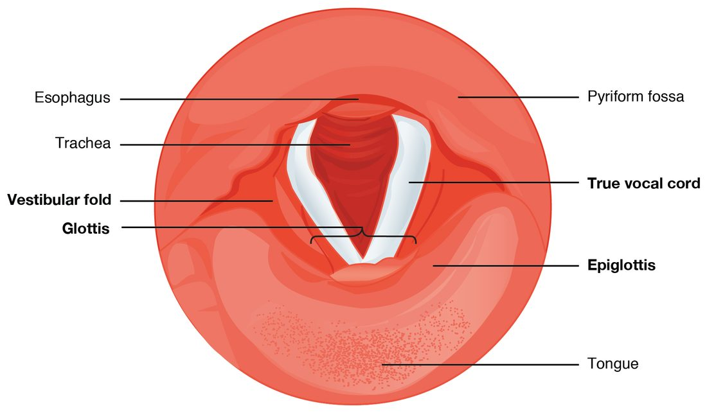

Upper respiratory tract anatomy covers the part of your airway you can almost feel from the outside: your nose, the throat behind it, and the voice box in your neck. Every breath you take passes through these three regions before it reaches your chest. This page walks the route in order: first the two zones of the whole respiratory tract, then the nose and nasal cavity, the defenses that clean the air, the three parts of the pharynx, and the larynx, the cartilage box that guards your lower airway and makes your voice.
Two zones: conducting and respiratory
Take one breath of cold, dusty air in through your nose. By the time that air reaches the deepest part of your lungs, it has been warmed to body temperature, soaked with water vapor and stripped of most of its dust. None of that cleaned air has yet crossed into your blood. The tubes that did the cleaning are only a delivery route.
That is the first way to divide the respiratory tract, by job rather than by place:
- The conducting zone (con- = together, duc- = lead) is every passage that carries air but where no oxygen crosses into the blood: the nose and nasal cavity, the pharynx, the larynx, the trachea, and the branching air tubes inside the lungs down to the smallest ones that have no alveoli in their walls. It filters, warms and humidifies the air and conducts it inward.
- The respiratory zone (re- = again, spir- = breathe) is where oxygen and carbon dioxide actually cross between air and blood: the very smallest airways, whose walls are dotted with alveoli, and the clusters of alveoli at their ends. You met alveoli in epithelial tissue as tiny air sacs lined by simple squamous epithelium. The next topic names each of these tiny airways.
| Conducting zone | Respiratory zone | |
|---|---|---|
| What it includes | Nasal cavity, pharynx, larynx, trachea and the branching air tubes down to the last ones without alveoli | The smallest airways with alveoli in their walls, and the alveoli themselves |
| Its job | Carries air in and out; filters, warms and humidifies it | Exchanges oxygen and carbon dioxide with the blood |
| Do gases cross into blood here? | No | Yes |
| Typical lining | Mostly pseudostratified ciliated columnar epithelium with goblet cells | Simple squamous epithelium, as thin as possible |
| Cilia and mucus | Yes, in most of it | No |
| Where it sits | From the nose to deep inside the lungs | Only deep inside the lungs |
A second way to divide the tract is by place. The upper respiratory tract is the nose, nasal cavity, pharynx and larynx, and the lower respiratory tract is everything below the larynx. Most textbooks count the larynx in the upper tract, as this course does; a few place it in the lower. This page covers the upper tract. Notice that the two divisions cut in different places: the entire upper tract is conducting zone, and so is a large part of the lower tract.
The nose and nasal cavity
Air enters through your nares (singular naris, Latin for nostril), the two openings at the bottom of your nose.
The external nose
The external nose is the part that sticks out of your face (Figure 1). Its top, between your eyes, is the root; the bony ridge below it is the bridge; the ridge running down the front is the dorsum nasi (dorsum = back, nasi = of the nose); the tip is the apex; and the flared wings that form the outer wall of each naris are the alae (singular ala, Latin for wing).
The upper third of the external nose is held up by bone: the paired nasal bones and parts of the maxillae and the frontal bone, which you met in the skull. The lower two thirds are held up by plates of hyaline cartilage and by fibrous tissue. That is why you can bend the tip of your nose but not its bridge, and why a hard blow to the nose so often breaks the nasal bones.

The nasal cavity
Behind the nares lies the nasal cavity (nas- = nose), the air space inside your nose (Figure 2). A few facts define its shape:
- The nasal septum (septum = partition) divides the cavity into right and left halves. Its front part is septal cartilage; its back part is bone, formed by the perpendicular plate of the ethmoid bone above and the vomer below. A septum bent to one side (a deviated septum) narrows one half.
- The floor is the bony roof of your mouth, formed by the maxillae and palatine bones. The floor of the nose and the roof of the mouth are the same sheet of bone.
- The roof is the cribriform plate of the ethmoid bone. A small patch of olfactory epithelium lines it, which is why sniffing, drawing air up high, helps you smell.
- The side walls carry the three nasal conchae (concha = shell): superior, middle and inferior. These curled shelves of bone, covered in mucous membrane, jut into the airway. The groove under each one is a meatus (a passage). The paranasal sinuses, the air spaces in the skull bones around the nose, drain into these meatuses, which is why a blocked nose and blocked sinuses so often go together.
- The front of each half, just inside the naris, is the nasal vestibule (vestibule = entrance hall). It is lined by skin with coarse hairs.
- The back of the cavity opens into the pharynx through two openings, one on each side of the septum.

What the nasal cavity does to the air
The nasal cavity is lined mostly by pseudostratified ciliated columnar epithelium, the respiratory epithelium you met in epithelial tissue, packed with goblet cells and resting on a lamina propria full of blood vessels and mucous and serous glands. Three things happen to air as it passes:
- It swirls. The conchae break the airstream into narrow, turbulent channels. Heavier particles cannot turn the corners with the air, so they hit the sticky mucus and stay there.
- It warms. Warm blood flows through a dense network of thin-walled vessels just under the mucosa. Heat passes from the blood to the air. By the time air leaves the nose, it has been warmed most of the way to body temperature, even on a cold day; the pharynx and trachea finish the job. The same shallow vessels are why nosebleeds are common.
- It is humidified. Water evaporates from the mucus into the passing air, so air reaching the pharynx is already moist, and by the time it is deep in the chest it is fully saturated with water vapor. Breathing through your mouth skips this step, which is why hours of mouth breathing dry your throat.
Airway defenses
Each day you breathe in thousands of liters of air carrying dust, pollen, soot and microorganisms. Almost none of it reaches your alveoli. Three layers of defense stop it.
Hairs and mucus
Hairs in the nasal vestibule catch large particles. Behind them, a continuous blanket of mucus, made by goblet cells and by glands in the lamina propria, coats the conducting zone. Mucus traps smaller particles, and it carries chemical defenses: lysozyme and defensins, the antimicrobial proteins of innate immunity, and IgA antibodies, the class of antibody secreted onto mucous membranes.
The mucociliary escalator
Mucus would soon clog the airway if it stayed put. It does not, because the cilia of the respiratory epithelium beat in coordinated waves, each cilium giving a fast forward stroke and a slow return stroke. The mucus sheet rides on top and moves like a conveyor belt:
- In the nasal cavity, cilia sweep mucus backward, toward the pharynx.
- In the trachea and the air tubes of the lungs, cilia sweep mucus upward, toward the pharynx.
Both streams meet in the pharynx, and you swallow the mucus, usually without noticing, so stomach acid destroys what it carries. This system of mucus plus cilia is called the mucociliary escalator (muc- = mucus, cili- = eyelash). It moves mucus up the airway at a few millimeters to a centimeter or so per minute.
The cough reflex and the sneeze reflex
When something slips past the escalator, two protective reflexes blast it out.
The cough reflex clears the larynx, trachea and the large air tubes below it:
- Dust, fluid or a crumb irritates sensory receptors in the lining of the larynx, the trachea or the large air tubes.
- Sensory fibers in the vagus nerve carry the signal to the brainstem.
- The brainstem triggers a quick, deep breath in.
- The vocal folds snap shut, sealing the airway at the larynx.
- The abdominal wall muscles and the internal intercostals contract hard against the closed airway, and the pressure of the air in the chest climbs steeply.
- The vocal folds open suddenly. Air bursts out at high speed and carries the irritant with it.
The sneeze reflex clears the nasal cavity. Irritation of the nasal mucosa is carried by the trigeminal nerve to the brainstem, which triggers the same sequence of a deep breath in and a forceful blast out. The difference is the route: the tongue and the back of the roof of the mouth move so that much of the blast goes out through the nose, sweeping the nasal cavity.
The pharynx
The pharynx (Greek for throat) is a muscular tube about 13 cm long, lined with mucous membrane, running from the back of the nasal cavity down to the level of the cricoid cartilage, where it continues as the esophagus. Its walls are skeletal muscle, which you use when you swallow. It has three parts, top to bottom (Figure 3):

Nasopharynx
The nasopharynx (naso- = nose) lies behind the nasal cavity and above the mouth. Only air passes through it. When you swallow, the muscular back part of the roof of your mouth lifts and seals it, so food and drink do not go up into your nose (the seal fails when you laugh while drinking). Its lining is respiratory epithelium. Two features sit in its walls:
- the pharyngeal tonsil, a patch of lymphoid tissue in the back wall, called the adenoids when it is enlarged, as it often is in children;
- the openings of the two auditory tubes, which connect the nasopharynx to the middle ears. Swallowing or yawning opens them and evens out pressure across your eardrums. They are also a route by which throat infections reach the middle ear.
Oropharynx
The oropharynx (oro- = mouth) lies behind the mouth, from the back of the roof of the mouth down to the level of the hyoid bone and the tip of the epiglottis. Both air and swallowed food pass through it. Because food scrapes it, its lining changes from respiratory epithelium to nonkeratinized stratified squamous epithelium, the tissue built for abrasion. The palatine tonsils sit in its side walls and the lingual tonsil at the base of the tongue, where they sample what you breathe and swallow.
Laryngopharynx
The laryngopharynx (laryngo- = larynx) lies behind the larynx, from the level of the hyoid bone down to the esophagus. It too carries both air and food and is lined by stratified squamous epithelium. At its lower end the route splits: air goes forward into the larynx, and food goes back into the esophagus. The larynx is the gatekeeper at that split.
The larynx
The larynx (Greek for upper windpipe), your voice box, is a short tube of cartilage in the front of your neck, between the laryngopharynx and the trachea. In an adult it lies roughly in front of the third to sixth cervical vertebrae. It has three jobs: it keeps an open airway, it keeps food and drink out of the lower airway, and it makes sound.
The cartilages
Nine cartilages, held together by ligaments and membranes and moved by small muscles, form its framework (Figure 4). Three large ones are unpaired:
- The thyroid cartilage (thyr- = shield, -oid = like) is the largest. Two plates of hyaline cartilage meet in front at an angle, forming a ridge you can feel in your neck: the laryngeal prominence, or Adam's apple. At puberty, testosterone makes the larynx grow, and the angle becomes sharper and more visible in males.
- The cricoid cartilage (cric- = ring) lies just below it. It is the only complete ring of cartilage in the airway, narrow in front and tall at the back, shaped like a signet ring. It sits on top of the trachea. The soft gap between the thyroid and cricoid cartilages, which you can feel as a dip below the Adam's apple, is spanned by the cricothyroid ligament; in an emergency, when the airway above is blocked, a clinician can cut through this ligament to make an airway.
- The epiglottis (epi- = upon, glottis = the opening between the vocal folds) is a leaf-shaped flap of elastic cartilage attached to the inside of the thyroid cartilage. Its free upper end stands up behind the base of the tongue.
Three smaller pairs, the arytenoid (aryten- = ladle), corniculate (cornicul- = little horn) and cuneiform (cune- = wedge) cartilages, sit at the back, on top of the cricoid. The arytenoid cartilages matter most: the vocal folds attach to them, and small muscles swivel and slide them to open, close and tighten the folds.

How the larynx keeps food out
Put your fingers on your Adam's apple and swallow. You feel it jump upward. Here is what happens in that second:
- The vocal folds close, then the folds above them: the airway is sealed from the inside first. This starts at the very beginning of the swallow, before or as the larynx moves.
- Muscles attached to the hyoid bone pull the larynx up and forward, tucking it under the base of the tongue.
- The upward movement and the pressure of the swallowed food tip the epiglottis down and back over the opening of the larynx, a second, outer cover.
- Food slides over the covered opening and into the esophagus. Breathing stops briefly while this happens.
If food or liquid gets past this seal, it touches the lining of the larynx below the folds, and the cough reflex fires at once.
Vocal folds, vestibular folds and the glottis
Look down into the larynx from above and you see two pairs of folds of mucous membrane stretched from front to back (Figure 5):
- The upper pair are the vestibular folds, also called the false vocal cords. They are thick and pink and do not make sound; they help close the larynx when you swallow or strain.
- The lower pair are the vocal folds (the true vocal cords, or simply vocal cords). Each has an elastic ligament inside, covered by nonkeratinized stratified squamous epithelium, which gives them their pearly white look and resists the wear of vibrating hundreds of times a second.
The glottis is the pair of vocal folds together with the gap between them. It is the narrowest part of the adult airway. Below the vocal folds, the lining changes back to respiratory epithelium.

| Vocal folds (true vocal cords) | Vestibular folds (false vocal cords) | |
|---|---|---|
| Position | Lower pair | Upper pair |
| Look | Pale, pearly white | Pink, thicker |
| Inside | An elastic vocal ligament and muscle | Mostly loose connective tissue and glands |
| Lining | Nonkeratinized stratified squamous epithelium | Respiratory epithelium |
| Make sound? | Yes: they vibrate | No |
| Help seal the airway? | Yes | Yes |
How the vocal folds make sound
- Small muscles swing the arytenoid cartilages together, bringing the vocal folds close together across the airway.
- You breathe out against them. Pressure builds below the folds until it pushes them apart, and a puff of air escapes.
- The elastic folds spring back together, and the cycle repeats, many times a second. The air leaves as a train of puffs: a sound.
- The pharynx, mouth, nasal cavity and paranasal sinuses shape and resonate the sound, and the tongue and lips turn it into speech.
Two variables set what you hear:
- Pitch depends on how fast the folds vibrate. Muscles that tighten and thin the folds raise the pitch, just as tightening a guitar string does. Longer, thicker folds vibrate more slowly: after puberty, the vocal folds in males lengthen and thicken, and the voice drops.
- Loudness depends on how hard air is pushed through the folds. More pressure below the glottis swings the folds wider and makes a louder sound.
Most of the small muscles that move the arytenoid cartilages are supplied by the recurrent laryngeal nerves, branches of the vagus nerve that loop down into the chest and back up to the larynx. Surgery on the thyroid gland, which wraps around the front of the trachea just below the larynx, can injure one, and the patient wakes up hoarse because one vocal fold no longer moves.
Putting the route together
Trace one breath through the upper tract: nares, nasal vestibule, nasal cavity (between the conchae), nasopharynx, oropharynx, laryngopharynx, larynx (through the glottis between the vocal folds), and on into the trachea. Air breathed through the mouth joins this route at the oropharynx and skips the nose's filtering, warming and humidifying.
Food uses part of the same route: mouth, oropharynx, laryngopharynx, esophagus. The shared stretch is the oropharynx and laryngopharynx, which is why the larynx must seal itself every time you swallow, and why a piece of food that lodges in the larynx can block your breathing completely. A choking person who cannot make a sound has a complete block: no air is passing between the vocal folds, so there is nothing to vibrate them, and no air can be drawn in to power a cough. That is why a rescuer has to supply the pressure from outside, with sharp upward thrusts below the ribs that squeeze the air already in the chest. The next topic follows the air below the larynx: the trachea, the branching air tubes of the lungs and the alveoli.